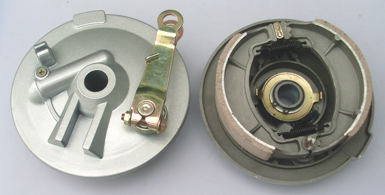

Brake Pads
Check brake pad thickness and condition and identify pads that are worn and need replacement.
Keep your motorcycle stopping safely and smoothly with professional brake inspections, repairs and component replacements.

Your motorcycle's brakes are one of its most important safety systems. Worn brake pads, damaged discs, low brake fluid and other brake problems can affect your stopping distance and control.
Our brake service helps identify worn or damaged components before they become a bigger problem. Whether you use your motorcycle for deliveries, commuting or everyday riding, keeping your brakes in good condition is essential.
Book a brake inspectionWe check the main components of your braking system and identify anything that may need attention.
Check brake pad thickness and condition and identify pads that are worn and need replacement.
Inspect discs for excessive wear, scoring, damage or other problems that can affect braking.
Check brake fluid level and condition and look for possible leaks within the system.
Inspect the braking system for loose, damaged or worn components.
Brake problems can develop gradually. Regular inspections make it easier to identify worn components before they affect your safety or cause more expensive damage.
Keeping your braking system properly maintained helps your motorcycle perform consistently when you need to stop quickly.
If you notice any of these warning signs, your motorcycle should be inspected.
Squeaking, grinding or unusual sounds when applying the brakes.
A brake lever that feels unusually soft, spongy or requires excessive movement.
Excessive vibration or pulsing through the brake lever while braking.
Your motorcycle takes longer to stop or the brakes no longer feel as responsive.
We follow a straightforward process to identify brake problems and get your motorcycle ready for the road.
We inspect your motorcycle's braking components and identify signs of wear or damage.
We explain what needs attention and recommend the appropriate repair or replacement.
Approved repairs and component replacements are carried out professionally.
We check the braking system again before your bike gets back on the road.
Pricing depends on the condition of your braking system and whether components such as brake pads, discs or other parts need to be replaced.
Don't wait until a small brake problem becomes a serious one. Book a service today and get back on the road with confidence.